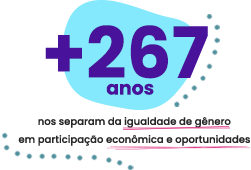
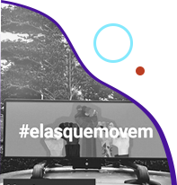

Não queremos ir para o spam! =( selecione este email como “confiável” ou mova-o para a Caixa de
Entrada.

Por que lutar pela igualdade de gênero AGORA?
Embora o maior gap de gênero apontado pelo
Global Gender Gap Report 2021
esteja relacionado à participação das mulheres na política,
participação na economia e oportunidades são os campos que levarão mais tempo
para se tornarem igualitários em todo o mundo: exatamente 267,5 anos se
continuarmos no ritmo atual.
Segundo o relatório, divulgado no final de março pelo
Fórum Econômico Mundial, essa demora está ligada a duas
tendências opostas – ao mesmo tempo em que a proporção de mulheres qualificadas continua
aumentando e a disparidade salarial lentamente diminui, as desigualdades de renda ainda estão a
apenas meio caminho de serem superadas, e mulheres representam só 27% dos cargos de
liderança.
Outros dados do report...
Efeitos atuais de um problema antigo: o fechamento das escolas e disponibilidade
limitada de serviços aumentou estresse, ansiedade, insegurança no trabalho e dificuldade de
equilibrar vida profissional e familiar entre mulheres com filhos. A dupla jornada, já
experimentada pelas mulheres, se acentuou ainda mais com a pandemia, escancarando seu efeito
prejudicial nas carreiras femininas.
Segregação ocupacional: Entre as 8 áreas consideradas como os “empregos do
amanhã”, apenas duas alcançaram a paridade de gênero (Pessoas e Cultura e Produção de Conteúdo), e
todos as outras têm a ver com tecnologia. Na
Computação em Nuvem, mulheres representam 14% da força de trabalho; em
Engenharia, 20%; e em Dados e IA, 32%. Esses números não vêm
melhorando significativamente.
Ligou os pontos? Enquanto não ocuparmos posições de liderança e não estivermos presentes nas áreas
mais promissoras da economia, continuaremos correndo contra o tempo. E 267 anos é tempo demais!
Sabemos que os dados não são animadores, mas pegue seu café, chá ou bebida preferida para
continuar a leitura: agora, vamos falar sobre como podemos acelerar essa transformação! Ah,
aproveite também para compartilhar esta edição com outras pessoas que possam curtir o
conteúdo. 😉
#WIN – WE Impact Networking
A tecnologia como ferramenta de empoderamento
por Tânia Cosentino, presidente da Microsoft Brasil
Para mudarmos o cenário de desigualdade de gênero na política, economia, saúde e educação,
áreas avaliadas pelo Global Gender Gap Report, é necessário agirmos com muita
intencionalidade, e aqui temos uma oportunidade única de
incentivar mulheres e meninas a seguirem a carreira de exatas.
Na Microsoft, acreditamos que a tecnologia e a
Inteligência Artificial têm um enorme potencial para se tornarem os
principais impulsionadores da recuperação e desenvolvimento social e econômico do Brasil, e
estas são ferramentas poderosas para ampliarmos a participação de mulheres no mercado de
trabalho, na liderança das empresas e na fundação de startups.
Segundo relatório da Brasscom de março de 2020, o Brasil forma 46 mil pessoas com perfil
tecnológico por ano, mas seriam necessárias 70 mil para atingir a necessidade do mercado.
Logo, há um
déficit de 24 mil formandos na área de Tecnologia da Informação anualmente.
A escassez de mão de obra faz com que os profissionais disponíveis sejam disputados.
Precisamos, portanto, acelerar nossa capacidade de formar mais profissionais de TI e,
sobretudo, atrair mais mulheres para essa área que, ao que tudo indica,
continuará a ser uma das mais promissoras nas próximas décadas.
Tenho plena consciência que o empoderamento feminino, a ampliação do número de mulheres na
liderança das empresas e a equidade de gênero são uma jornada e que este cenário não vai ser
alterado do dia para noite. Mas também estou convencida que uma das melhores
formas de minimizarmos essas desigualdades é por meio da educação.
Cursos gratuitos da Microsoft para apoiar mulheres a seguirem carreira em
tecnologia:
Programa de Capacitação de Mulheres Empreendedoras, em parceria com a International
Finance Corporation (IFC), membro do Grupo Banco Mundial, e apoio da
WE Impact e da WE Ventures.
O próximo workhsop será no dia 5 de maio.
O portal maismulheres.tech, com seis trilhas de
aprendizagem gratuitas para capacitar 100 mil mulheres para o mercado de tecnologia até
novembro de 2021, em parceria com a WoMakersCode.
Nossa busca por uma DevWeb e o conceito de ações afirmativas
No ano passado, abrimos na WE Impact uma vaga para Desenvolvedora Web e fomos surpreendidas
com quase 300 currículos, muitos deles acompanhados de relatos sobre como o foco em mulheres
animou as candidatas a participarem do processo. Depois de mais entrevistas do que
imaginávamos, demos as boas vindas à Raissa, que hoje atua na nossa área Digital.
Agimos com base no conceito de “ações afirmativas”, que buscam diminuir desigualdades por
meio da oferta de oportunidades focadas em grupos social e economicamente desfavorecidos,
seja por meio do estabelecimento de cotas, metas de participação ou outros tipos de
incentivo.
Lembra do programa de trainee para negros lançado pela Magazine Luiza em 2020? Alvo de
polêmicas, a ação afirmativa buscava aumentar a participação quase nula de negros em cargos
de liderança na varejista.
O que aprendemos com esses dois exemplos? Muitas vezes, para encontrar profissionais mais
diversos, basta procurá-los.
#DicadaCEO
Aposte na diversidade
Para conseguir resultados mais potentes e sustentáveis, aposte na diversidade. Entretanto,
como CEO, reforço que é necessário que esta aposta seja feita de maneira coerente e
responsável. A organização deve se responsabilizar por criar um ambiente que conduza as
relações entre os diferentes perfis de seus ‘recursos humanos’, para que seja possível que
todos desenvolvam seus potenciais, viabilizando correlacionar produtividade e retorno. Não
basta montar uma equipe e liderança diversas – é necessário pavimentar o caminho para que se
chegue à equidade de oportunidades e potencialidades dentro do ambiente de trabalho.
#Elasimpactam

A tecnologia como ferramenta de empoderamento
Durante o mês da mulher, a
Mobees, pioneira em mídia exterior
digital sobre carros de aplicativos, lançou a campanha ‘Elas que movem’ para movimentar
o empreendedorismo feminino!
Convocando empresas que apoiam a luta feminina por oportunidades e representatividade
nesse mercado, a startup, cofundada pela Flávia Coelho (CMO), prometeu reverter 30% das
suas vendas de março em divulgação gratuita de negócios locais liderados por mulheres.
A previsão é de gerar, agora em abril, mais de 50 milhões de impactos para essas marcas
nas ruas do Rio de Janeiro, cidade natal da adtech, startup investida da nossa parceira
WE Ventures.
#Namídia
Startup que facilita gestão de aulas online recebe investimento
Nossa investida Pontue, plataforma SaaS de aprendizagem encerrou sua primeira rodada de
investimento com aportes também do Eleva Educação e da WIM Angels. A cofundadora e CEO
Cris Miura contou à Startupi por que as três investidoras da edutech serão estratégicas.
#Nasredes
Perdeu esse conteúdo?
Nosso post mais curtido no
Instagram nos últimos 15 dias
explica algumas das principais cláusulas de contratos de investimento em startups, com a
colaboração das advogadas Anna Luiza Pires e Renata Borges.